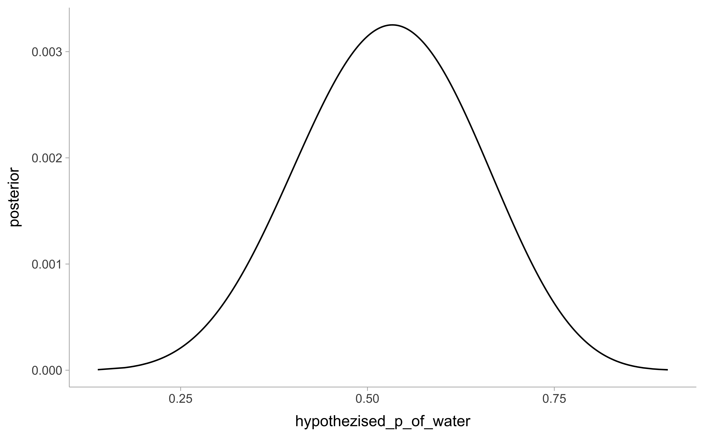

The Easy problems use the samples from the posterior distribution for the globe tossing example. This code will give you a specific set of samples, so that you can check your answers exactly. Use the values in samples to answer the questions that follow.
# hypothezised_p_of_water is a sequence of all possible values from percentage of water on planetn_water =6n_tosses =9d_e <-tibble(hypothezised_p_of_water =seq(from =0, to =1, length.out =1000),prior =1) |># define priormutate(likelihood =dbinom(n_water, size = n_tosses, prob = hypothezised_p_of_water)) |># compute likelihood at each value in gridmutate(unstd_posterior = likelihood * prior) |># compute product of likelihood and priormutate(posterior = unstd_posterior /sum(unstd_posterior)) # standardize the posterior, so it sums to 1n_samples <-10000set.seed(100)samples_e <- d_e |>sample_n(size = n_samples, weight = posterior, replace = T) # sampling entire lines from d_e. the "posterior" argument gives every line in d_e the probability of being chosen for the samples tibbled_e |>ggplot(aes(x = hypothezised_p_of_water, y = posterior)) +geom_line()
samples_e |>ggplot(aes(x = hypothezised_p_of_water, y = posterior)) +geom_line() # samples for the easy questions
The two distributions look similar. However, as n_samples becomes small, the shape of samples$posterior becomes less smooth.
3E1.
How much posterior probability lies below p = 0.2?
samples_e |>filter(hypothezised_p_of_water <0.2) |># all the p's < 0.2summarise(perc_p =n()/n_samples) # get percentage of all p's < 0.2
# A tibble: 1 × 1
perc_p
<dbl>
1 0.0004
3E2.
How much posterior probability lies above p = 0.8?
Which values of p contain 66% of the posterior probability, assuming equal posterior probability both below and above the interval?
# 33% of the posterior must be outside, 17.5% on each side of the distributionquantile(samples_e$hypothezised_p_of_water, probs =c(0.175, .825))
17.5% 82.5%
0.5045045 0.7667668
3M1.
Suppose the globe tossing data had turned out to be 8 water in 15 tosses. Construct the posterior distribution, using grid approximation. Use the same flat prior as before.
# hypothezised_p_of_water is a sequence of all possible values from percentage of water on planetn_water =8n_tosses =15d_m <-tibble(hypothezised_p_of_water =seq(from =0, to =1, length.out =1000),prior =1) |># define priormutate(likelihood =dbinom(n_water, size = n_tosses, prob = hypothezised_p_of_water)) |># compute likelihood at each value in gridmutate(unstd_posterior = likelihood * prior) |># compute product of likelihood and priormutate(posterior = unstd_posterior /sum(unstd_posterior)) # standardize the posterior, so it sums to 1d_m |>ggplot(aes(x = hypothezised_p_of_water, y = posterior)) +geom_line()
3M2.
Draw 10,000 samples from the grid approximation from above. Then use the samples to calculate the 90% HPDI for p.
samples_m |>ggplot(aes(x = hypothezised_p_of_water, y = posterior)) +geom_line()

3M3.
Construct a posterior predictive check for this model and data. This means simulate the distribution of samples, averaging over the posterior uncertainty in p. What is the probability of observing 8 water in 15 tosses?
=> here, we use code from Solomon Kurz’ translation of the textbook, section 3.3.2
n_dummy_water <-tibble(n_waters =rbinom(n_samples, # same size in samples_msize = n_tosses, # 15prob = samples_m$hypothezised_p_of_water)) # create 10000 simulated observed water in n_tosses, with the actual percentage of water coming from the p's sampled proportionally from the posterior # how many of the dummy-data results show 8 waters in 15 tosses?mean(n_dummy_water$n_waters ==8)
[1] 0.1499
n_dummy_water %>%ggplot(aes(x = n_waters)) +geom_histogram(binwidth =1, center =0,color ="grey92") +scale_x_continuous("dummy water count") +ylab("frequency")
3M4.
Using the posterior distribution constructed from the new (8/15) data, now calculate the probability of observing 6 water in 9 tosses.
n_dummy_water <-tibble(n_waters =rbinom(n_samples, # same size in samples_msize =9, # 15prob = samples_m$hypothezised_p_of_water)) # create 10000 simulated observed water in n_tosses, with the actual percentage of water coming from the p's sampled proportionally from the posterior # how many of the dummy-data results show 6 waters in 9 tosses, but taking the posterior from the 8/15 data?mean(n_dummy_water$n_waters ==6)
[1] 0.1842
n_dummy_water %>%ggplot(aes(x = n_waters)) +geom_histogram(binwidth =1, center =0,color ="grey92") +scale_x_continuous("dummy water count") +ylab("frequency")
3M5
Start over at 3M1, but now use a prior that is zero below p = 0.5 and a constant above p = 0.5. This corresponds to prior information that a majority of the Earth’s surface is water. Repeat each problem above and compare the inferences (using both priors) to the true value p = 0.7.
n_water =8n_tosses =15d_m2 <-tibble(hypothezised_p_of_water =seq(from =0, to =1, length.out =1000),prior =case_when(hypothezised_p_of_water <0.5~0, hypothezised_p_of_water >=0.5~0.1)) %>%# define priormutate(likelihood =dbinom(n_water, size = n_tosses, prob = hypothezised_p_of_water)) %>%# compute likelihood at each value in gridmutate(unstd_posterior = likelihood * prior) %>%# compute product of likelihood and priormutate(posterior = unstd_posterior /sum(unstd_posterior)) # standardize the posterior, so it sums to 1n_samples <-10000set.seed(3)samples_m2 <- d_m2 %>%sample_n(size = n_samples, weight = posterior, replace = T)# re-doing also the easy ones, for the sake of completeness#: post-prob < 0.2mean(samples_m2$hypothezised_p_of_water <0.2)
[1] 0
mean(samples_m2$hypothezised_p_of_water >0.8)
[1] 0.013
mean(between(samples_m2$hypothezised_p_of_water, left =0.2, right =0.8))
# Draw 10,000 samples from the grid approximation from above. Then use the sample to calculate the 90% HPDI for p.mode_hdi(samples_m2$hypothezised_p_of_water, .width =0.9)
# Construct a posterior predictive check for this model and data. The means simulate the distribution of samples, averaging over the posterior uncertainty in p. What is the probability of observing 8 water in 15 tosses?dummy_tosses <-rbinom(1000, 15, prob = samples_m2$hypothezised_p_of_water)mean(dummy_tosses ==8)
[1] 0.158
# Using the posterior distribution constructed from the new (8/15) data, now calculate the probability of observing 6 water in 9 tosses.dummy_tosses <-rbinom(1000, 9, prob = samples_m2$hypothezised_p_of_water)mean(dummy_tosses ==6)
Suppose you want to estimate the Earth’s proportion of water very precisely. Specifically, you want the 99% percentile interval of the posterior distribution of p to be only 0.05 wide. This means the distance between the upper and lower bound of the interval should be 0.05. How many times will you have to toss the globe to do this?
# strategy: trying out until the mode_hdi is as small as required#generating the "real" datan_tosses <-2201# play around with this numbern_water <-rbinom(1, n_tosses, prob =0.7) # fake observations of earth# getting posterior => best guess of proportiond_m3 <-tibble(hypothezised_p_of_water =seq(from =0, to =1, length.out =1000), prior =1, likelyhood =dbinom(n_water, n_tosses, prob = hypothezised_p_of_water), posterior = likelyhood*prior / (sum(likelyhood*prior)))# sampling from the posterior to simulate redoing the experiment 10000 timessamples_m3 <-sample(d_m3$hypothezised_p_of_water,size =10000, prob = d_m3$posterior, replace = T )# what is the 99% hdi?a <-mode_hdi(samples_m3, .width =0.99)a$ymax - a$ymin
[1] 0.05005006
3H1.
Using grid approximation, compute the posterior distribution for the probability of a birth being a boy. Assume a uniform prior probability. Which parameter value maximizes the posterior probability?
d_h |>pivot_longer(names_to ="value_name", values_to ="value", 2:6) |>ggplot(aes(x = p_boy_hypothetical, y = value, color = value_name)) +geom_point()+scale_color_manual(values =wes_palette("Darjeeling2", n =5, type ="discrete"))
3H2.
Using the sample function, draw 10,000 random parameter values from the posterior distribution you calculated above. Use these samples to estimate the 50%, 89%, and 97% highest posterior density intervals.
#3H3. Use rbinom to simulate 10,000 replicates of 200 births. You should end up with 10,000 numbers, each one a count of boys out of 200 births. Compare the distribution of predicted numbers of boys to the actual count in the data (111 boys out of 200 births). There are many good ways to visualize the simulations, but the dens command (part of the rethinking package) is probably the easiest way in this case. Does it look like the model fits the data well? That is, does the distribution of predictions include the actual observation as a central, likely outcome?
#simulating 10'000 cohorts 200 births to get the number of births from the posterior of estimations of the most likely true percentage of boysdummy_data_n_boys<-rbinom(1e5, size =200, prob = samples_h)break_func <-function(x) {length(seq(min(x), max(x), by =1)) +1}ggplot() +stat_histinterval(aes(x = dummy_data_n_boys), .width =c(0.66, 0.89), breaks = break_func) +geom_vline(aes(xintercept = n_boys), linetype ="dashed", color ="red") +labs(x ="Number of Boys", y ="Density")
3H4.
Now compare 10,000 counts of boys from 100 simulated first borns only to the number of boys in the first births, birth1. How does the model look in this light?
dummy_data_n_boys<-rbinom(1e5, size =100, prob = samples_h)break_func <-function(x) {length(seq(min(x), max(x), by =1)) +1}ggplot() +stat_histinterval(aes(x = dummy_data_n_boys), .width =c(0.66, 0.89), breaks = break_func) +geom_vline(aes(xintercept =sum(birth1)), linetype ="dashed", color ="red") +labs(x ="Number of Boys", y ="Density")
3H5.
The model assumes that sex of first and second births are independent. To check this assumption, focus now on second births that followed female first borns. Compare 10,000 simulated counts of boys (coming from the original model which assumes independence) to only those second births that followed girls. To do this correctly, you need to count the number of first borns who were girls and simulate that many births, 10,000 times. Compare the counts of boys in your simulations to the actual observed count of boys following girls. How does the model look in this light? Any guesses what is going on in these data?
Conclusion: The model, assuming independence (i.e. drawing from the posterior of all the births sample_h) would predict much fewer boys in the second births. So either having a girl alters something biological such that conception of boys becomes more likely, or families who have already a girls are more likely to abort female fetuses and keep the male ones more often.
Source Code
---title: "Chapter3"format: html: code-fold: false code-tools: trueeditor: sourceauthor: Lilla Gurtnereditor_options: chunk_output_type: console---```{r setup, echo = F, message = F, error=F, include = F}# knitr global options ----knitr::opts_chunk$set(fig.pos ='H',echo = T,message = F,warning = F, dpi =600,fig.align ="center", fig.asp =0.62) # golden ratiolibrary(tidyverse)library(tidybayes) # nice plotinglibrary(brms)library(wesanderson)theme_set(theme_tidybayes())```The Easy problems use the samples from the posterior distribution for the globe tossing example. This code will give you a specific set of samples, so that you can check your answers exactly. Use the values in samples to answer the questions that follow.```{r data4easy}# hypothezised_p_of_water is a sequence of all possible values from percentage of water on planetn_water =6n_tosses =9d_e <-tibble(hypothezised_p_of_water =seq(from =0, to =1, length.out =1000),prior =1) |># define priormutate(likelihood =dbinom(n_water, size = n_tosses, prob = hypothezised_p_of_water)) |># compute likelihood at each value in gridmutate(unstd_posterior = likelihood * prior) |># compute product of likelihood and priormutate(posterior = unstd_posterior /sum(unstd_posterior)) # standardize the posterior, so it sums to 1n_samples <-10000set.seed(100)samples_e <- d_e |>sample_n(size = n_samples, weight = posterior, replace = T) # sampling entire lines from d_e. the "posterior" argument gives every line in d_e the probability of being chosen for the samples tibbled_e |>ggplot(aes(x = hypothezised_p_of_water, y = posterior)) +geom_line()samples_e |>ggplot(aes(x = hypothezised_p_of_water, y = posterior)) +geom_line() # samples for the easy questions```The two distributions look similar. However, as `n_samples` becomes small, the shape of samples$posterior becomes less smooth.# 3E1. How much posterior probability lies below p = 0.2? ```{r}samples_e |>filter(hypothezised_p_of_water <0.2) |># all the p's < 0.2summarise(perc_p =n()/n_samples) # get percentage of all p's < 0.2```# 3E2. How much posterior probability lies above p = 0.8? ```{r}samples_e |>filter(hypothezised_p_of_water >0.8) |>summarise(perc_p =n()/n_samples)```# 3E3. How much posterior probability lies between p = 0.2 and p = 0.8? ```{r}samples_e |>filter(hypothezised_p_of_water <0.8& hypothezised_p_of_water >0.2) |>summarise(perc_p =n()/n_samples)# or:samples_e |>filter(between(hypothezised_p_of_water, 0.2, 0.8)) |>summarise(perc_p =n()/n_samples)```# 3E4. 20% of the posterior probability lies below which value of p? ```{r}quantile(samples_e$hypothezised_p_of_water, probs =0.2)```#3E5. 20% of the posterior probability lies above which value of p? ```{r}quantile(samples_e$hypothezised_p_of_water, probs =0.8)```# 3E6. Which values of p contain the narrowest interval equal to 66% of the posterior probability? ```{r}mode_hdi(samples_e$hypothezised_p_of_water, .width =0.66)```# 3E7. Which values of p contain 66% of the posterior probability, assuming equal posterior probability both below and above the interval?```{r}# 33% of the posterior must be outside, 17.5% on each side of the distributionquantile(samples_e$hypothezised_p_of_water, probs =c(0.175, .825))```# 3M1.Suppose the globe tossing data had turned out to be 8 water in 15 tosses. Construct the posterior distribution, using grid approximation. Use the same flat prior as before. ```{r}# hypothezised_p_of_water is a sequence of all possible values from percentage of water on planetn_water =8n_tosses =15d_m <-tibble(hypothezised_p_of_water =seq(from =0, to =1, length.out =1000),prior =1) |># define priormutate(likelihood =dbinom(n_water, size = n_tosses, prob = hypothezised_p_of_water)) |># compute likelihood at each value in gridmutate(unstd_posterior = likelihood * prior) |># compute product of likelihood and priormutate(posterior = unstd_posterior /sum(unstd_posterior)) # standardize the posterior, so it sums to 1d_m |>ggplot(aes(x = hypothezised_p_of_water, y = posterior)) +geom_line()```# 3M2. Draw 10,000 samples from the grid approximation from above. Then use the samples to calculate the 90% HPDI for p. ```{r}n_samples <-10000set.seed(100)samples_m <- d_m %>%sample_n(size = n_samples, weight = posterior, replace = T)mode_hdi(samples_m$hypothezised_p_of_water, .probs =c(0.05, 0.95))samples_m |>ggplot(aes(x = hypothezised_p_of_water, y = posterior)) +geom_line()```# 3M3. Construct a posterior predictive check for this model and data. This means simulate the distribution of samples, averaging over the posterior uncertainty in p. What is the probability of observing 8 water in 15 tosses?=> here, we use code from Solomon Kurz' translation of the textbook, [section 3.3.2](https://bookdown.org/content/4857/sampling-the-imaginary.html#sampling-to-simulate-prediction)```{r}n_dummy_water <-tibble(n_waters =rbinom(n_samples, # same size in samples_msize = n_tosses, # 15prob = samples_m$hypothezised_p_of_water)) # create 10000 simulated observed water in n_tosses, with the actual percentage of water coming from the p's sampled proportionally from the posterior # how many of the dummy-data results show 8 waters in 15 tosses?mean(n_dummy_water$n_waters ==8)n_dummy_water %>%ggplot(aes(x = n_waters)) +geom_histogram(binwidth =1, center =0,color ="grey92") +scale_x_continuous("dummy water count") +ylab("frequency") ```# 3M4. Using the posterior distribution constructed from the new (8/15) data, now calculate the probability of observing 6 water in 9 tosses.```{r}n_dummy_water <-tibble(n_waters =rbinom(n_samples, # same size in samples_msize =9, # 15prob = samples_m$hypothezised_p_of_water)) # create 10000 simulated observed water in n_tosses, with the actual percentage of water coming from the p's sampled proportionally from the posterior # how many of the dummy-data results show 6 waters in 9 tosses, but taking the posterior from the 8/15 data?mean(n_dummy_water$n_waters ==6)n_dummy_water %>%ggplot(aes(x = n_waters)) +geom_histogram(binwidth =1, center =0,color ="grey92") +scale_x_continuous("dummy water count") +ylab("frequency") ```# 3M5Start over at 3M1, but now use a prior that is zero below p = 0.5 and a constant above p = 0.5. This corresponds to prior information that a majority of the Earth’s surface is water. Repeat each problem above and compare the inferences (using both priors) to the true value p = 0.7.```{r 3m5}n_water =8n_tosses =15d_m2 <-tibble(hypothezised_p_of_water =seq(from =0, to =1, length.out =1000),prior =case_when(hypothezised_p_of_water <0.5~0, hypothezised_p_of_water >=0.5~0.1)) %>%# define priormutate(likelihood =dbinom(n_water, size = n_tosses, prob = hypothezised_p_of_water)) %>%# compute likelihood at each value in gridmutate(unstd_posterior = likelihood * prior) %>%# compute product of likelihood and priormutate(posterior = unstd_posterior /sum(unstd_posterior)) # standardize the posterior, so it sums to 1n_samples <-10000set.seed(3)samples_m2 <- d_m2 %>%sample_n(size = n_samples, weight = posterior, replace = T)# re-doing also the easy ones, for the sake of completeness#: post-prob < 0.2mean(samples_m2$hypothezised_p_of_water <0.2)mean(samples_m2$hypothezised_p_of_water >0.8)mean(between(samples_m2$hypothezised_p_of_water, left =0.2, right =0.8))quantile(samples_m2$hypothezised_p_of_water, probs =0.2)mode_hdi(samples_m2$hypothezised_p_of_water, .width = .66)quantile(samples_m2$hypothezised_p_of_water, probs =c(0.175, 0.825))# Draw 10,000 samples from the grid approximation from above. Then use the sample to calculate the 90% HPDI for p.mode_hdi(samples_m2$hypothezised_p_of_water, .width =0.9)# Construct a posterior predictive check for this model and data. The means simulate the distribution of samples, averaging over the posterior uncertainty in p. What is the probability of observing 8 water in 15 tosses?dummy_tosses <-rbinom(1000, 15, prob = samples_m2$hypothezised_p_of_water)mean(dummy_tosses ==8)# Using the posterior distribution constructed from the new (8/15) data, now calculate the probability of observing 6 water in 9 tosses.dummy_tosses <-rbinom(1000, 9, prob = samples_m2$hypothezised_p_of_water)mean(dummy_tosses ==6)d_m2 |>ggplot(aes(x = hypothezised_p_of_water, y= posterior)) +geom_line()hist(samples_m2$hypothezised_p_of_water)```# 3M6. Suppose you want to estimate the Earth's proportion of water very precisely. Specifically, you want the 99% percentile interval of the posterior distribution of p to be only 0.05 wide. This means the distance between the upper and lower bound of the interval should be 0.05. How many times will you have to toss the globe to do this?```{r}# strategy: trying out until the mode_hdi is as small as required#generating the "real" datan_tosses <-2201# play around with this numbern_water <-rbinom(1, n_tosses, prob =0.7) # fake observations of earth# getting posterior => best guess of proportiond_m3 <-tibble(hypothezised_p_of_water =seq(from =0, to =1, length.out =1000), prior =1, likelyhood =dbinom(n_water, n_tosses, prob = hypothezised_p_of_water), posterior = likelyhood*prior / (sum(likelyhood*prior)))# sampling from the posterior to simulate redoing the experiment 10000 timessamples_m3 <-sample(d_m3$hypothezised_p_of_water,size =10000, prob = d_m3$posterior, replace = T )# what is the 99% hdi?a <-mode_hdi(samples_m3, .width =0.99)a$ymax - a$ymin```# 3H1.Using grid approximation, compute the posterior distribution for the probability of a birth being a boy. Assume a uniform prior probability. Which parameter value maximizes the posterior probability?```{r hard data}birth1 <-c(1,0,0,0,1,1,0,1,0,1,0,0,1,1,0,1,1,0,0,0,1,0,0,0,1,0, 0,0,0,1,1,1,0,1,0,1,1,1,0,1,0,1,1,0,1,0,0,1,1,0,1,0,0,0,0,0,0,0, 1,1,0,1,0,0,1,0,0,0,1,0,0,1,1,1,1,0,1,0,1,1,1,1,1,0,0,1,0,1,1,0, 1,0,1,1,1,0,1,1,1,1) birth2 <-c(0,1,0,1,0,1,1,1,0,0,1,1,1,1,1,0,0,1,1,1,0,0,1,1,1,0, 1,1,1,0,1,1,1,0,1,0,0,1,1,1,1,0,0,1,0,1,1,1,1,1,1,1,1,1,1,1,1,1, 1,1,1,0,1,1,0,1,1,0,1,1,1,0,0,0,0,0,0,1,0,0,0,1,1,0,0,1,0,0,1,1, 0,0,0,1,1,1,0,0,0,0)all_births <-c(birth1, birth2)``````{r}n_births <-length(all_births)n_boys <-sum(birth1) +sum(birth2)d_h <-tibble(p_boy_hypothetical =seq(from =0, to =1,length.out =1000), prior_boy =0.01, likelyhood =dbinom(x = n_boys, size = n_births, prob = p_boy_hypothetical), post_unst = likelyhood * prior_boy, standartization_term =sum(likelyhood * prior_boy),posterior = post_unst / standartization_term)# Which parameter value maximizes the posterior probability?d_h |>filter(posterior ==max(d_h$posterior))d_h |>pivot_longer(names_to ="value_name", values_to ="value", 2:6) |>ggplot(aes(x = p_boy_hypothetical, y = value, color = value_name)) +geom_point()+scale_color_manual(values =wes_palette("Darjeeling2", n =5, type ="discrete"))```# 3H2.Using the sample function, draw 10,000 random parameter values from the posterior distribution you calculated above. Use these samples to estimate the 50%, 89%, and 97% highest posterior density intervals.```{r}samples_h <-sample(d_h$p_boy_hypothetical, size =1e4, prob = d_h$posterior, replace = T)mode_hdi(samples_h, .width =c(0.5, 0.89, 0.97))```#3H3. Use rbinom to simulate 10,000 replicates of 200 births. You should end up with 10,000 numbers, each one a count of boys out of 200 births. Compare the distribution of predicted numbers of boys to the actual count in the data (111 boys out of 200 births). There are many good ways to visualize the simulations, but the dens command (part of the rethinking package) is probably the easiest way in this case. Does it look like the model fits the data well? That is, does the distribution of predictions include the actual observation as a central, likely outcome?```{r}#simulating 10'000 cohorts 200 births to get the number of births from the posterior of estimations of the most likely true percentage of boysdummy_data_n_boys<-rbinom(1e5, size =200, prob = samples_h)break_func <-function(x) {length(seq(min(x), max(x), by =1)) +1}ggplot() +stat_histinterval(aes(x = dummy_data_n_boys), .width =c(0.66, 0.89), breaks = break_func) +geom_vline(aes(xintercept = n_boys), linetype ="dashed", color ="red") +labs(x ="Number of Boys", y ="Density")```# 3H4.Now compare 10,000 counts of boys from 100 simulated first borns only to the number of boys in the first births, birth1. How does the model look in this light?```{r}dummy_data_n_boys<-rbinom(1e5, size =100, prob = samples_h)break_func <-function(x) {length(seq(min(x), max(x), by =1)) +1}ggplot() +stat_histinterval(aes(x = dummy_data_n_boys), .width =c(0.66, 0.89), breaks = break_func) +geom_vline(aes(xintercept =sum(birth1)), linetype ="dashed", color ="red") +labs(x ="Number of Boys", y ="Density")```# 3H5.The model assumes that sex of first and second births are independent. To check this assumption, focus now on second births that followed female first borns. Compare 10,000 simulated counts of boys *(coming from the original model which assumes independence)* to only those second births that followed girls. To do this correctly, you need to count the number of first borns who were girls and simulate that many births, 10,000 times. Compare the counts of boys in your simulations to the actual observed count of boys following girls. How does the model look in this light? Any guesses what is going on in these data?```{r}dummy_data_n_boys<-rbinom(1e5, size =100, prob = samples_h)n_girl1 <-sum(birth1 ==0)dummy_data_boys_after_girls <-rbinom(n =1e5, size = n_girl1, prob = samples_h)births_data <-tibble(birth1 = birth1, birth2 = birth2) |>mutate(boy_after_girl =case_when(birth1 ==0& birth2 ==1~1, .default =0))true_n_boys_after_girl <-sum(births_data$boy_after_girl)ggplot() +geom_histogram(aes(x = dummy_data_boys_after_girls)) +geom_vline(xintercept = true_n_boys_after_girl)```Conclusion: The model, assuming independence (i.e. drawing from the posterior of all the births `sample_h`) would predict much fewer boys in the second births. So either having a girl alters something biological such that conception of boys becomes more likely, or families who have already a girls are more likely to abort female fetuses and keep the male ones more often.